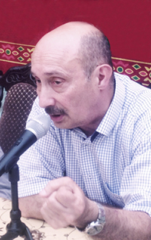
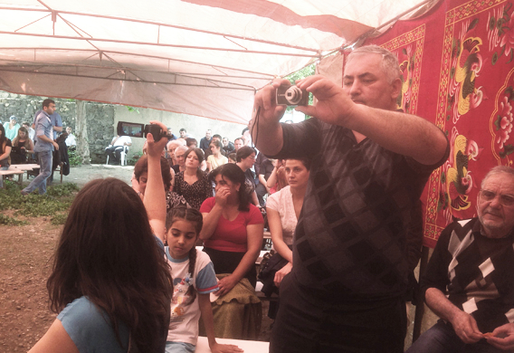

КТО УБЕРЕТ ТРУП СОБАКИ?
«Труп собаки должен убрать тот, кто ее убил»
(азерб. пословица)
1. Уже никто не отпирается от очевидного факта, что этно-территориальные конфликты были инспирированы Кремлем со стратегической целью подвесить на этот крюк целые регионы. Является ли это дальновидной политикой, покажет будущее. А пока на этих крюках висят Молдова, Грузия, Армения, Азербайджан, недавно добавилась Украина.
2. Технология производства подобных крюков требует активного и творческого участия националистов государства-жертвы. Любое действие этно-националистов дает право России «защитить» обижаемый малый этнос от титульных националистов. Так было в Молдове, где румынские националисты внесли свою весомую лепту в конструирование крюка Приднестровской Молдавской Республики, так было в Грузии, где этно-националисты во главе с Гамсахурдиа стали мощными катализаторами центробежных движений в заселенных этническими меньшинствами регионах. В Карабахе застрельщиками производства крюка под ребра армянской нации выступили профессиональные плакальщики по горькой судьбе многострадального и древнего, но сильно обиженного соседями народа, но трудно отрицать также весомый вклад в этот производственный процесс также тюркских националистов Азербайджана.
Только слепой не увидит роль украинских этно-националистов в тех бедствиях, которые приключились с их государством в текущем злополучном 2014 году.
3. 20 лет Армения и Азербайджан демонстрируют миру модель прекращения огня, которому нет, как у нас любит писать официальная пресса, «аналога». Расстояние между окопами враждующих сторон от 50 метров до 500. Прошло 20 лет, оборонный бюджет Азербайджана превышает весь бюджет Республики Армения уже три года, но стороны все так же более-менее соблюдают Бишкекский протокол. С 1994-го года и до сих пор на линии прекращения огня погибли 610 и получили ранения 750 военнослужащих армии Азербайджана. Про потери армянской армии скажут мои армянские коллеги. Тем не менее, протокол в целом соблюдается. В чем секрет? Совпадают интересы или обе стороны не осмеливаются ослушаться то государство, которое воткнуло этот крюк им под ребра?
4. Свержение президента Левона Тер-Петросяна, расстрел 27-го октября в парламенте спикера Национального Собрания и премьер –министра Армении, кульбит Армении от ЕС в сторону Таможенного Союза 3-го сентября прошлого года ясно демонстрируют эффективность крюка под ребра Армении. Если кто-то сомневается в качестве крюка под ребра Азербайджана, то визит дорогого ВВП в августе прошлого года поставил все точки над «i».
5. Запад в карабахском конфликте получил готовый продукт и сумел войти в игру на том этапе, когда все карты были уже розданы. Поэтому попытки США в Ки-Уэсте внести некие свежие и неординарные идеи в процесс были заведомо обречены на неудачу. Может даже хорошо, что тогда Роберт Кочарян и Гейдар Алиев в Майами проявили чувствительность к крюкам под своими ребрами, иначе мы могли бы наблюдать такие сцены, как убийство очередным армянским патриотом «предателя святого дела армянского народа», или же вполне законное самоопределение лезгинского меньшинства на границе с Дагестаном, с последующим воссоединением разделенного народа уже на территории РФ. Так что за наш «Севастополь мы еще не ответили».
6. Долгоиграющая пластинка с липучей и тягучей песенкой «мирные переговоры» будет длиться до тех пор, пока стороны конфликта будут пай-мальчиками и покорно слушаться держателя крюков. Позволю себе провокативное предсказание, тем более, что нахожусь среди сторонников ненасильственных действий. Перспективы Армении: с учетом того прискорбного факта, что каждый год 50 тыс. армян уезжают из этой благословенной и любимой родины, а население уже насчитывает где-то полтора миллиона человек, то 9-го мая 2044-ого года предпоследний армянин будет принимать парад Победы по случаю освобождения Шуши на главной площади Еревана. Перед ним, печатая шаг, строевым шагом пройдет последний армянин Армении. Потом, надо полагать, они оба эмигрируют, и занавес опуститься.
Что касается Азербайджана, то все зависит от того, найдут ли геологи еще какие-то нефтяные и газовые месторождения на суше и на море. Если найдут, то страна останется, если нет… Как говорится в русской пословице, «На нет и суда нет».
7. О реальных перспективах урегулирования конфликта серьезно говорить не приходиться, ибо тот, кто убил собаку, убирать труп отказывается.
8. Посему все жители 11-ти постсоветских республик СНГ с надеждой и тревогой ждут сообщения о начале «Сток-Чейнсовского дыхания» у 12-го бывшего соотечественника и союзника. Некоторые аналитики уверены в его жизнеспособности и указывают на последние якобы успехи в деле приращения своих территорий за счет вчерашних братских народов. Другие же говорят, что он так позитивно потеет перед отбытием в мир иной…
2. Технология производства подобных крюков требует активного и творческого участия националистов государства-жертвы. Любое действие этно-националистов дает право России «защитить» обижаемый малый этнос от титульных националистов. Так было в Молдове, где румынские националисты внесли свою весомую лепту в конструирование крюка Приднестровской Молдавской Республики, так было в Грузии, где этно-националисты во главе с Гамсахурдиа стали мощными катализаторами центробежных движений в заселенных этническими меньшинствами регионах. В Карабахе застрельщиками производства крюка под ребра армянской нации выступили профессиональные плакальщики по горькой судьбе многострадального и древнего, но сильно обиженного соседями народа, но трудно отрицать также весомый вклад в этот производственный процесс также тюркских националистов Азербайджана.
Только слепой не увидит роль украинских этно-националистов в тех бедствиях, которые приключились с их государством в текущем злополучном 2014 году.
3. 20 лет Армения и Азербайджан демонстрируют миру модель прекращения огня, которому нет, как у нас любит писать официальная пресса, «аналога». Расстояние между окопами враждующих сторон от 50 метров до 500. Прошло 20 лет, оборонный бюджет Азербайджана превышает весь бюджет Республики Армения уже три года, но стороны все так же более-менее соблюдают Бишкекский протокол. С 1994-го года и до сих пор на линии прекращения огня погибли 610 и получили ранения 750 военнослужащих армии Азербайджана. Про потери армянской армии скажут мои армянские коллеги. Тем не менее, протокол в целом соблюдается. В чем секрет? Совпадают интересы или обе стороны не осмеливаются ослушаться то государство, которое воткнуло этот крюк им под ребра?
4. Свержение президента Левона Тер-Петросяна, расстрел 27-го октября в парламенте спикера Национального Собрания и премьер –министра Армении, кульбит Армении от ЕС в сторону Таможенного Союза 3-го сентября прошлого года ясно демонстрируют эффективность крюка под ребра Армении. Если кто-то сомневается в качестве крюка под ребра Азербайджана, то визит дорогого ВВП в августе прошлого года поставил все точки над «i».
5. Запад в карабахском конфликте получил готовый продукт и сумел войти в игру на том этапе, когда все карты были уже розданы. Поэтому попытки США в Ки-Уэсте внести некие свежие и неординарные идеи в процесс были заведомо обречены на неудачу. Может даже хорошо, что тогда Роберт Кочарян и Гейдар Алиев в Майами проявили чувствительность к крюкам под своими ребрами, иначе мы могли бы наблюдать такие сцены, как убийство очередным армянским патриотом «предателя святого дела армянского народа», или же вполне законное самоопределение лезгинского меньшинства на границе с Дагестаном, с последующим воссоединением разделенного народа уже на территории РФ. Так что за наш «Севастополь мы еще не ответили».
6. Долгоиграющая пластинка с липучей и тягучей песенкой «мирные переговоры» будет длиться до тех пор, пока стороны конфликта будут пай-мальчиками и покорно слушаться держателя крюков. Позволю себе провокативное предсказание, тем более, что нахожусь среди сторонников ненасильственных действий. Перспективы Армении: с учетом того прискорбного факта, что каждый год 50 тыс. армян уезжают из этой благословенной и любимой родины, а население уже насчитывает где-то полтора миллиона человек, то 9-го мая 2044-ого года предпоследний армянин будет принимать парад Победы по случаю освобождения Шуши на главной площади Еревана. Перед ним, печатая шаг, строевым шагом пройдет последний армянин Армении. Потом, надо полагать, они оба эмигрируют, и занавес опуститься.
Что касается Азербайджана, то все зависит от того, найдут ли геологи еще какие-то нефтяные и газовые месторождения на суше и на море. Если найдут, то страна останется, если нет… Как говорится в русской пословице, «На нет и суда нет».
7. О реальных перспективах урегулирования конфликта серьезно говорить не приходиться, ибо тот, кто убил собаку, убирать труп отказывается.
8. Посему все жители 11-ти постсоветских республик СНГ с надеждой и тревогой ждут сообщения о начале «Сток-Чейнсовского дыхания» у 12-го бывшего соотечественника и союзника. Некоторые аналитики уверены в его жизнеспособности и указывают на последние якобы успехи в деле приращения своих территорий за счет вчерашних братских народов. Другие же говорят, что он так позитивно потеет перед отбытием в мир иной…
ДИЛЕММА ПЕРВИЧНОСТИ КУРИЦЫ ИЛИ ЯЙЦА
(к мечтаниям о южнокавказском общем рынке)
После развала соцлагеря бывшие социалистические и советские страны независимыми не стали. Просто поменялись покровители. Место СССР занял Запад во главе с США. Но мечты об интеграции в различные международные союзы, где народов дожидаются несметные блага, продолжают занимать беспокойные умы. При этом почти все забывают, что существовали союзы с очень высокой долей интеграции, где они были членами: например, СССР и СЭВ.
Могут возразить, что это были не совсем эффективные и добровольные союзы. Насчет эффективности можно подискутировать с цифрами на руках, но добровольность тогда явно отсутствовала. Все ли в порядке с добровольностью в ЕС? Ведь он переживает тяжелейший системный и структурный кризис, который совпадает с мировым кризисом капитализма. В ЕС странами, принимающими решения, стали страны –доноры, прежде всего ФРГ. Вот почему в Европе растет число сторонников партий, ратующих за выход своих стран из ЕС. Британия собирается проводить референдум о выходе из этой структуры.
Членство в ЕС не всем пошло на пользу автоматически. Например, Болгария находится в перманентном социально-экономическом и политическом кризисе. Она вступила в ЕС под торжественные фанфары в 2007 году. Прошло семь лет. Что изменилось? Болгария завозит «болгарский перец» из Португалии, «болгарские помидоры» из Турции… Не лучше обстоят дело с табаком и вином. Про промышленность можно забыть. Средняя зарплата 400 евро, пенсия – 200. Численность населения упала до уровня 1952-го года, потому что из страны уезжают молодые и квалифицированные люди.
Народ на улицах Софии проводит постоянные митинги протеста. Я лично не верю, что болгарский народ сможет найти решение своих проблем на митингах, даже самых массовых. Митинги не способны решить системные пороки мировой экономики, прежде всего финансовые. Пожелаем всему миру выбраться из глубокой ямы долгового кризиса.
Можем подытожить и сказать, что интеграция в ЕС не для всех стран Восточной Европы обернулась развитием. Некоторые из них пережили катастрофу деиндустриализации и подверглись цивилизационной деградации (Болгария, Венгрия, Румыния). Вступление в ЕС оказалось успешным только для тех стран, которые имели соответствующую историко-культурную и социально-политическую базу для принятия рациональных решений (Польша, Чехия, Словакия).
Интеграционным грезам предаются некоторые мусульманские мечтатели, которые ссылаются на огромный географический ареал проживания мусульман, численность (1,5 млрд), энергетические ресурсы (90% мировых). Но им в голову не приходит подумать о том, что 57 мусульманских стран производят всего 7% мирового ВВП, что из 48 беднейших стран мира 22 – мусульманские.
Так что не в интеграции дело, а в уровне культуры народа и зрелости общественно-политических институтов.
Из постсоветских республик в ЕС наиболее успешно вписалась Эстония. Латвия и Литва почти полностью потеряли свой промышленный потенциал и сейчас теряют свое население, которое эмигрирует в богатые страны Запада. Хотя уровень доходов населения в Прибалтике выше, чем на ЮК. Но у них миллиардеров намного меньше.
В постсоциалистических странах решения об интеграции в ЕС принимали их элиты при почти полном незнании большинством населения сути и механизмов функционирования ЕС. Для последнего было достаточно поверхностных лозунгов типа «Хотим жить хорошо как в Европе!» При этом только небольшая группа экспертов в полном объеме представляла себе сложность процесса и социально-экономические издержки этой интеграции. Даже сейчас большая часть населения объединенной Европы не совсем ясно представляет себе устройство ЕС, на что часто сетуют лидеры Европы.
Могут возразить, что это были не совсем эффективные и добровольные союзы. Насчет эффективности можно подискутировать с цифрами на руках, но добровольность тогда явно отсутствовала. Все ли в порядке с добровольностью в ЕС? Ведь он переживает тяжелейший системный и структурный кризис, который совпадает с мировым кризисом капитализма. В ЕС странами, принимающими решения, стали страны –доноры, прежде всего ФРГ. Вот почему в Европе растет число сторонников партий, ратующих за выход своих стран из ЕС. Британия собирается проводить референдум о выходе из этой структуры.
Членство в ЕС не всем пошло на пользу автоматически. Например, Болгария находится в перманентном социально-экономическом и политическом кризисе. Она вступила в ЕС под торжественные фанфары в 2007 году. Прошло семь лет. Что изменилось? Болгария завозит «болгарский перец» из Португалии, «болгарские помидоры» из Турции… Не лучше обстоят дело с табаком и вином. Про промышленность можно забыть. Средняя зарплата 400 евро, пенсия – 200. Численность населения упала до уровня 1952-го года, потому что из страны уезжают молодые и квалифицированные люди.
Народ на улицах Софии проводит постоянные митинги протеста. Я лично не верю, что болгарский народ сможет найти решение своих проблем на митингах, даже самых массовых. Митинги не способны решить системные пороки мировой экономики, прежде всего финансовые. Пожелаем всему миру выбраться из глубокой ямы долгового кризиса.
Можем подытожить и сказать, что интеграция в ЕС не для всех стран Восточной Европы обернулась развитием. Некоторые из них пережили катастрофу деиндустриализации и подверглись цивилизационной деградации (Болгария, Венгрия, Румыния). Вступление в ЕС оказалось успешным только для тех стран, которые имели соответствующую историко-культурную и социально-политическую базу для принятия рациональных решений (Польша, Чехия, Словакия).
Интеграционным грезам предаются некоторые мусульманские мечтатели, которые ссылаются на огромный географический ареал проживания мусульман, численность (1,5 млрд), энергетические ресурсы (90% мировых). Но им в голову не приходит подумать о том, что 57 мусульманских стран производят всего 7% мирового ВВП, что из 48 беднейших стран мира 22 – мусульманские.
Так что не в интеграции дело, а в уровне культуры народа и зрелости общественно-политических институтов.
Из постсоветских республик в ЕС наиболее успешно вписалась Эстония. Латвия и Литва почти полностью потеряли свой промышленный потенциал и сейчас теряют свое население, которое эмигрирует в богатые страны Запада. Хотя уровень доходов населения в Прибалтике выше, чем на ЮК. Но у них миллиардеров намного меньше.
В постсоциалистических странах решения об интеграции в ЕС принимали их элиты при почти полном незнании большинством населения сути и механизмов функционирования ЕС. Для последнего было достаточно поверхностных лозунгов типа «Хотим жить хорошо как в Европе!» При этом только небольшая группа экспертов в полном объеме представляла себе сложность процесса и социально-экономические издержки этой интеграции. Даже сейчас большая часть населения объединенной Европы не совсем ясно представляет себе устройство ЕС, на что часто сетуют лидеры Европы.

Национальный вопрос не есть искусственный. Он очень даже натуральный. В условиях стабильности и крепкой власти он находится на периферии общественного внимания. При кризисе и слабой власти национальный вопрос становится привлекательной оберткой для камуфляжа самых примитивных и эгоистических вожделений социально-активной и безответственной части этноса. Неудобно открыто говорить «Сам хочу ездить на своем народе». Приличнее говорить «Хватить чужеземцам ездить на нашем народе!» Как только чужеземные наездники слезают со спины народа, сразу же на нее влезают «радетели нации». Так случилось во всех постсоветских странах. В этом суть всех национально-освободительных движений и революций.
Укрупнение субъектов экономических процессов – требование времени. Каждая из стран ЮК в отдельности слишком мала для того, чтобы пытаться играть самостоятельную роль в экономике. Однако даже совокупно ЮК слишком мал для того, чтобы реализовывать некие большие проекты. ЮК обречен быть составной частью неких больших региональных или глобальных проектов, которые будут исполняться крупными державами или транснациональными компаниями. Однако и сотрудничество в масштабах малого и среднего бизнеса способно дать ощутимый толчок развитию.
ЕС создавался под эгидой США. Именно США и «План Маршалла» стали стимулятором создания ЕС. Для начала интеграции сначала были сняты политические конфликты. Потом начались долгие и упорные переговоры с целью найти подходящие формы сотрудничества. Опыт ЕС – бесценен, он является эталоном демократического согласования противоречий. Даже сейчас случаются рецидивы торговых войн между крупными игроками мировой экономики.
Гегемоном ЮК является Россия. РФ находится в процессе перманентной цивилизационной деградации. Она не только не хочет, но и не может предложить народам ЮК привлекательный социальный проект. Но она способна не допустить выбор странами ЮК альтернативного вектора развития. Средством контроля над странами ЮК являются управляемые Кремлем конфликты. В эту схему не вписываются интеграция стран ЮК и создание каких-либо «свободных экономических зон».
Этно-территориальные конфликты не позволяют начать движение в сторону создания структур экономического сотрудничества. Азербайджан и Грузия потому и сумели наладить сотрудничество, что летом 1989 года Народные Фронты Грузии и Азербайджана сумели совместно сорвать попытку Кремля стравить два соседних народа. Наличие карабахского конфликта делает невозможным экономическое сотрудничество Азербайджана с Арменией, которое могло бы принести огромную пользу двум народам. Демократическим силам удалось сорвать попытку разжечь костер аваро-азербайджанского и лезгино-азербайджанского конфликта. А урок ТММР, как орудия борьбы за право распоряжаться доходами от бакинской нефти, еще свежи в памяти.
В армянском и азербайджанском обществах есть группы граждан, которые считают, что экономическое сотрудничество, торговля и совместные проекты способны помочь разрешению конфликтов на ЮК. Эти мечтания имеют позитивное значение и свидетельствуют, что здоровое начало в этих обществах все еще живет и действует. Однако надо быть реалистами и признать, что ни РФ, ни зависимые от нее правительства Армении и Азербайджана никогда не позволят, чтобы экономическое сотрудничество между рядовыми гражданами и сопутствующее этому усиление мирных настроений в обществе поколебали их монопольное право на власть и богатство. Власти будут делать все, чтобы потенциал мирного разрешения конфликта не был реализован.
Конфликт кажется неразрешимым не потому, что его решение невозможно, а потому, что идет нескончаемое обсуждение неисполнимого варианта, учитывающего взаимоисключающие интересы РФ и его политических вассалов в регионе. В обсуждаемых вариантах не учтены интересы рядовых граждан Армении и Азербайджана, которым их права и свободы, работа, благополучие и безопасность более важны, чем «кто будет ездить на народе».
Полезно предаваться мечтам о будущем экономическом сотрудничестве в рамках единого Кавказа. Эти мечты стимулируют воображение и укрепляют гуманистический потенциал наших обществ. Однако совместный мозговой штурм вариантов мирного решения на основе взаимных компромиссов нам представляется на настоящем этапе более полезным. Если эти варианты активистами гражданского общества будут согласованы, разъяснены народам и получат их поддержку, если народы своей непреодолимой волей добьются воцарения мира, экономическая интеграция ЮК станет простой правовой и организационной операцией, при реализации которой можно будет воспользоваться богатейшими техническими и юридическими наработками Европейского Союза.
Зардушт Ализаде
06-12-12
Текали
Грузия
Фото: Мариам Ломидзе, Тина Шавадзе
Укрупнение субъектов экономических процессов – требование времени. Каждая из стран ЮК в отдельности слишком мала для того, чтобы пытаться играть самостоятельную роль в экономике. Однако даже совокупно ЮК слишком мал для того, чтобы реализовывать некие большие проекты. ЮК обречен быть составной частью неких больших региональных или глобальных проектов, которые будут исполняться крупными державами или транснациональными компаниями. Однако и сотрудничество в масштабах малого и среднего бизнеса способно дать ощутимый толчок развитию.
ЕС создавался под эгидой США. Именно США и «План Маршалла» стали стимулятором создания ЕС. Для начала интеграции сначала были сняты политические конфликты. Потом начались долгие и упорные переговоры с целью найти подходящие формы сотрудничества. Опыт ЕС – бесценен, он является эталоном демократического согласования противоречий. Даже сейчас случаются рецидивы торговых войн между крупными игроками мировой экономики.
Гегемоном ЮК является Россия. РФ находится в процессе перманентной цивилизационной деградации. Она не только не хочет, но и не может предложить народам ЮК привлекательный социальный проект. Но она способна не допустить выбор странами ЮК альтернативного вектора развития. Средством контроля над странами ЮК являются управляемые Кремлем конфликты. В эту схему не вписываются интеграция стран ЮК и создание каких-либо «свободных экономических зон».
Этно-территориальные конфликты не позволяют начать движение в сторону создания структур экономического сотрудничества. Азербайджан и Грузия потому и сумели наладить сотрудничество, что летом 1989 года Народные Фронты Грузии и Азербайджана сумели совместно сорвать попытку Кремля стравить два соседних народа. Наличие карабахского конфликта делает невозможным экономическое сотрудничество Азербайджана с Арменией, которое могло бы принести огромную пользу двум народам. Демократическим силам удалось сорвать попытку разжечь костер аваро-азербайджанского и лезгино-азербайджанского конфликта. А урок ТММР, как орудия борьбы за право распоряжаться доходами от бакинской нефти, еще свежи в памяти.
В армянском и азербайджанском обществах есть группы граждан, которые считают, что экономическое сотрудничество, торговля и совместные проекты способны помочь разрешению конфликтов на ЮК. Эти мечтания имеют позитивное значение и свидетельствуют, что здоровое начало в этих обществах все еще живет и действует. Однако надо быть реалистами и признать, что ни РФ, ни зависимые от нее правительства Армении и Азербайджана никогда не позволят, чтобы экономическое сотрудничество между рядовыми гражданами и сопутствующее этому усиление мирных настроений в обществе поколебали их монопольное право на власть и богатство. Власти будут делать все, чтобы потенциал мирного разрешения конфликта не был реализован.
Конфликт кажется неразрешимым не потому, что его решение невозможно, а потому, что идет нескончаемое обсуждение неисполнимого варианта, учитывающего взаимоисключающие интересы РФ и его политических вассалов в регионе. В обсуждаемых вариантах не учтены интересы рядовых граждан Армении и Азербайджана, которым их права и свободы, работа, благополучие и безопасность более важны, чем «кто будет ездить на народе».
Полезно предаваться мечтам о будущем экономическом сотрудничестве в рамках единого Кавказа. Эти мечты стимулируют воображение и укрепляют гуманистический потенциал наших обществ. Однако совместный мозговой штурм вариантов мирного решения на основе взаимных компромиссов нам представляется на настоящем этапе более полезным. Если эти варианты активистами гражданского общества будут согласованы, разъяснены народам и получат их поддержку, если народы своей непреодолимой волей добьются воцарения мира, экономическая интеграция ЮК станет простой правовой и организационной операцией, при реализации которой можно будет воспользоваться богатейшими техническими и юридическими наработками Европейского Союза.
Зардушт Ализаде
06-12-12
Текали
Грузия
Фото: Мариам Ломидзе, Тина Шавадзе